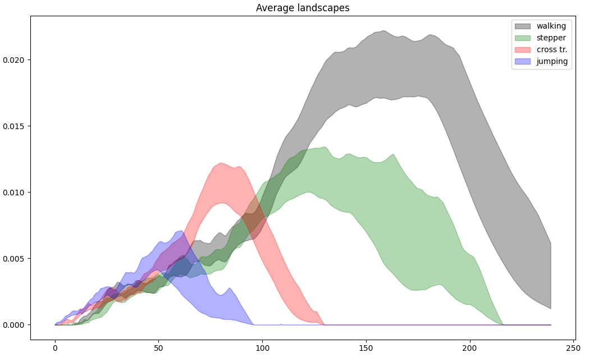

Rips complex persistence scikit-learn like interface#
|
|
|
Rips complex persistence scikit-learn like interface example#
The example below has been taken from the publication “Subsampling Methods for Persistent Homology” [], the one with magnetometer data from different activities. For each activity, 7500 consecutive measurements are considered as a 3D point cloud in the Euclidean space. For nb_times = 80 times, we subsample nb_points = 200 points from the point cloud of each activity.
The TDA scikit-learn pipeline is constructed and is composed of:
RipsPersistencethat builds a Rips complex from the inputs and returns its persistence diagramsDiagramSelectorthat removes non-finite persistence diagrams valuesLandscapethat builds the persistence landscapes from persistence diagrams
Finally, a bootstrap method (that computes a two-sided bootstrap confidence interval of a statistic) from scipy is used to compute the confidence intervals for each activity. Note this bootstrap method is not exactly the one used in the paper, the multiplier bootstrap cited in the paper [].
These confidence intervals are displayed, and one can see that it is possible to distinguish human activities performed while wearing only magnetic sensor unit on the left leg.
# Standard data science imports
import numpy as np
from scipy.stats import bootstrap
from sklearn.pipeline import Pipeline
import matplotlib.pyplot as plt
# Import TDA pipeline requirements
from gudhi.sklearn import RipsPersistence
from gudhi.representations import DiagramSelector, Landscape
# To fetch the dataset
from gudhi.datasets import remote
no_plot = False
no_plot = args.no_plot
# Constants for subsample
nb_times = 80
nb_points = 200
def subsample(array):
sub = []
# construct a list of nb_times x nb_points
for sub_idx in range(nb_times):
sub.append(array[np.random.choice(array.shape[0], nb_points, replace=False)])
return sub
# Constant for plot_average_landscape
landscape_resolution = 600
# Nothing interesting after 0.4, you can set this filter to 1 (number of landscapes) if you want to check
filter = int(0.4 * landscape_resolution)
def plot_average_landscape(landscapes, color, label):
landscapes = landscapes[:, :filter]
rng = np.random.default_rng()
res = bootstrap(
(np.transpose(landscapes),),
np.std,
method="basic",
axis=-1,
confidence_level=0.95,
random_state=rng,
)
ci_l, ci_u = res.confidence_interval
plt.fill_between(np.arange(0, filter, 1), ci_l, ci_u, alpha=0.3, color=color, label=label)
# Fetch datasets and subsample them
walking = subsample(remote.fetch_daily_activities(subset="walking"))
stepper = subsample(remote.fetch_daily_activities(subset="stepper"))
cross = subsample(remote.fetch_daily_activities(subset="cross_training"))
jumping = subsample(remote.fetch_daily_activities(subset="jumping"))
pipe = Pipeline(
[
("rips_pers", RipsPersistence(homology_dimensions=1, n_jobs=-2)),
("finite_diags", DiagramSelector(use=True, point_type="finite")),
("landscape", Landscape(num_landscapes=1, resolution=landscape_resolution)),
]
)
# Fit the model with the complete dataset - mainly for the landscape window computation
pipe.fit(walking + stepper + cross + jumping)
# Compute Rips, persistence, landscapes and plot average landscapes
plot_average_landscape(pipe.transform(walking), "black", "walking")
plot_average_landscape(pipe.transform(stepper), "green", "stepper")
plot_average_landscape(pipe.transform(cross), "red", "cross tr.")
plot_average_landscape(pipe.transform(jumping), "blue", "jumping")
plt.title("Average landscapes")
plt.legend()
if no_plot == False:
plt.show()

Average Landscapes of 4 different activities.#